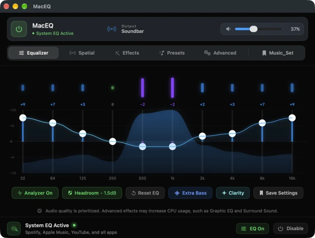
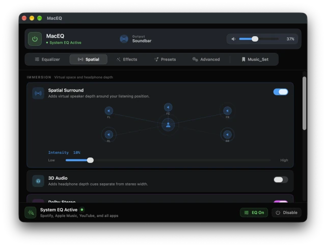
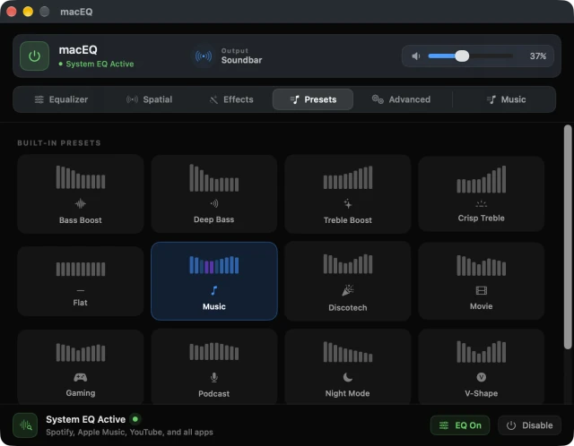
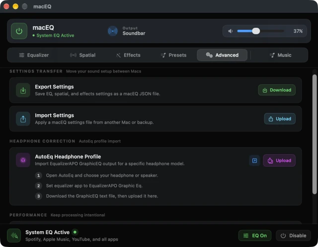

Free to try · Requires macOS 27 · No Driver · No Subscription

The ten-band equalizer, with the live curve and spectrum analyzer.
macEQ shapes the sound of every app at once — Spotify, Apple Music, YouTube,
Safari, Chrome — with a 10-band EQ, studio stereo processing, and a live spectrum analyzer.
Most Mac equalizers make you install a virtual audio driver and reroute your output device.
macEQ doesn't. It uses Apple's native CATapDescription audio tap API — the same
mechanism macOS uses for screen recording audio. Toggle it off and your original audio
routing returns in real time.
Features
Every App, Simultaneously — one EQ for the whole system, no per-app setup.
No Driver, No system changes — no kernel extension, no virtual device in Sound settings.
10-band parametric EQ — 32 Hz to 16 kHz, ±12 dB, with a live bezier curve as you drag.
Live Spectrum Analyzer — real-time audio energy per band, drawn separately from your EQ curve.
Quick Actions — Extra Bass and Clarity add on top of your current curve and fully reverse on tap-off.
Bluetooth & AirPods — full support, not just wired output.
Menu Bar App — adjust the curve, switch presets or set volume without leaving what you're doing.
Spatial and Effects
Stereo Width — true Mid-Side processing from 0% mono to 200% super-wide.
Crossfeed — blends 30% of each channel into the opposite ear, so long headphone sessions stop being tiring.
Spatial Surround — virtual 5-channel surround with an animated speaker diagram.
Enhanced Stereo — plate reverb processing for cinematic stereo expansion.
Auto Level — holds every track at consistent loudness, so loud ads stop startling you.
Volume Boost — 100–200% beyond the macOS system maximum.
Night Mode & Ambience — roll off harsh highs, or add natural small-room depth.
Fidelity & Pitch Shift — restore air and micro-detail; move pitch ±12 semitones without changing speed.
Spatial effects controls for stereo width, crossfeed, and surround.

Five virtual speaker positions with adjustable intensity.
Presets
13 built-in presets, plus unlimited of your own. Each tile shows its EQ shape at a glance
and comes alive with the music when selected.
Bass Boost · Deep Bass · Treble Boost · Crisp Treble · Flat · Music · Movie · Gaming ·
Podcast · Night Mode · V-Shape · Warm · Orchestra
A saved preset stores the whole session — EQ, spatial settings, effects, pitch, volume boost
and auto level — under one name. One tap restores everything.

Built-in and personal presets, all in one place.
Advance Features

Advanced controls for settings portability, headphone correction, and efficient processing.
Export Settings — save your full EQ, spatial, and effects setup as a single file. Back it up or take it to another Mac.
Import Settings — restore any macEQ settings file in seconds. No reconfiguring from scratch.
AutoEq Headphone Profile — download a correction curve for your specific headphone from autoeq.app and import it directly. macEQ maps it to your 10 bands automatically.
Low CPU Mode — removes inactive audio processing nodes from the chain when you're not using them. Lower idle CPU, same sound quality.
Spectrum Analyzer Control — the live analyzer is powerful but optional. Turn it off for a quieter interface or lower CPU draw; the EQ keeps running either way.
How to use
Open macEQ and enable System EQ from the bottom bar.
Use the power button to turn real-time processing on or off.
Pick a preset, or shape the 10-band EQ manually.
Add Extra Bass or Clarity for a quick tone change.
Open Spatial for surround depth, stereo width, crossfeed and balance.
Set volume boost, ambience, pitch, Night Mode or auto leveling.